bayescores: Comprehensive Quantification of Clinical Benefit in Randomized Controlled Trials Using Bayesian Inference and Multi-Attribute Utility Theory
bayescores provides a comprehensive toolkit for analyzing randomized controlled trials (RCTs). This package introduces the Bayesian Clinical Benefit Scores (BayeScores), a novel metric to quantify clinical benefit by accounting for both survival prolongation and cure rates.
Key Features
Fit Robust Bayesian Models: Implements Bayesian Accelerated Failure Time (AFT) mixture cure models using Stan. The framework allows you to:
Incorporate empirical and skeptical priors to stabilize inference and reduce bias, especially with immature data.
Use the unique properties of AFT mixture cure models to quantify clinical benefit in a novel way.
Assess Data Maturity: Run a novel non-identifiability test on the model’s parameters. This check serves as a statistical proxy for data maturity, helping to determine if the follow-up is sufficient to reliably estimate the long-term benefit.
Calculate Holistic Benefit Scores: Compute the final clinical benefit score, the BayeScores.
The score is derived using concave functions to more realistically reflect clinical utility (e.g., ensuring diminishing returns for each additional month of survival).
Includes comprehensive visualization tools to display the scores, results, and all model diagnostics.
Simulate Realistic Scenarios: Generate complex survival data from mixture cure models to validate methods, perform power analyses, and plan future studies.
Installation
Install the development version of bayescores from GitHub:
# install.packages("devtools")
devtools::install_github("albertocarm/bayescores")Full example
This example illustrates the complete workflow—from data simulation to visualization of benefit scores. Here, simulated RCTs enable clear observation of how parameter changes influence BayeScores.
Step 2: Simulate survival data
This package provides tools to navigate one of today’s most significant clinical challenges: the inherent conflict between speed and certainty in drug development. While accelerated approvals are vital for getting promising therapies to patients, they often rely on immature datasets where long-term efficacy is not yet definitive.
To illustrate how our package addresses this, we use a toy example specifically designed to mimic these conditions of uncertainty. We simulate a 300-patient trial with promising long-term survival fractions (40% in the experimental arm vs. 15% in the control), but with the maximum follow-up limited to 3 years.
set.seed(123)
sim_data <- simulate_weibull_cure_data(
n_patients = 300,
cure_fraction_ctrl = 0.15,
cure_fraction_exp = 0.40,
max_follow_up = 3*12,
weibull_shape = 1.2,
median_survival_ctrl = 12,
time_ratio_exp = 1.25
)
plot_km_curves(sim_data)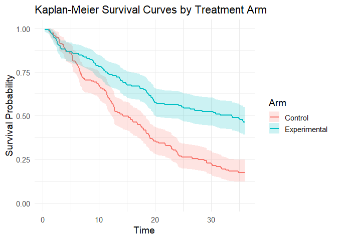
data(package = "bayescores")Step 3: Simulate study toxicity
Generate toxicity data for a trial with 1:1 randomization (150 control patients), baseline toxicity of 50% (any-grade), 20% severe events (G3–4), and 1.5× higher toxicity in the experimental arm. QoL outcomes assume “Significant Improvement” with “Very High” evidence.
Quality of Life Parameters:
qol_scenario(expected QoL outcome):1: Significant Improvement2: Stabilization / Probable Benefit3: No Difference / Marginal Benefit4: Deterioration5: Insufficient Data / Unknownqol_strength(confidence in QoL evidence):1: Very Low2: Low3: Moderate4: High5: Very High
toxicity_trial <- simulate_trial_data(
n_control = 150,
ratio_str = "1:1",
control_g1_4_pct = 50,
control_g3_4_pct = 20,
tox_ratio = 1.5,
qol_scenario = 1,
qol_strength = 5
)To analyze toxicity in non-simulated data, you obviously need to go to the actual toxicity table, look up the quality-of-life articles associated with that trial, and manually fill in an object similar to the one produced by the simulate_trial_data function.
Visualize toxicity with AMIT plots:
Any-grade toxicity (Grades 1–4)
create_amit_plot(
trial_object = toxicity_trial,
grade_type = "any_grade",
main_title = "Example: Any-Grade Toxicity Profile",
data_element = "toxicity",
n_element = "N_patients"
)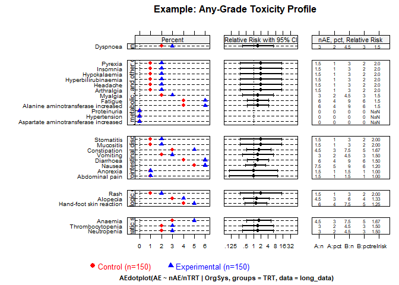
Severe toxicity (Grades 3+)
create_amit_plot(
trial_object = toxicity_trial,
grade_type = "severe_grade",
main_title = "Example: Severe-Grade (G3+) Toxicity Profile",
data_element = "toxicity",
n_element = "N_patients"
)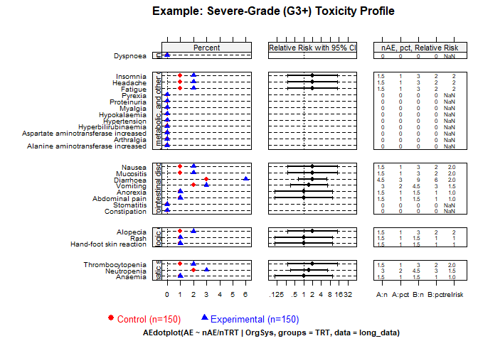
Step 4: Fit the Bayesian cure model
Fit the Bayesian AFT cure model (use higher iter in practice):
library(rstan)
options(mc.cores = parallel::detectCores())
rstan_options(auto_write = TRUE)
bayesian_fit <- fit_bayesian_cure_model(
sim_data,
time_col = "time",
event_col = "event",
arm_col = "arm",
iter = 4000,
chains = 4,
cure_belief = "unknown",
shared_shape = TRUE
)Step 5: Analyze and visualize model results
The mixture cure model separates individuals into:
- Cured (long-term survivors): negligible event risk long-term.
- Susceptible (uncured): ongoing event risk; survival prolonged but not cured.
Inspect numerical summaries and visualize posterior distributions. You can verify that the model satisfactorily recovers the time ratio and the fractions of long‑term survivors. However, the model also signals an identifiability issue (see below).
print(bayesian_fit$stan_fit, pars = c("beta_cure_arm", "beta_surv_arm", "alpha_control"))
#> Inference for Stan model: anon_model.
#> 4 chains, each with iter=4000; warmup=1000; thin=1;
#> post-warmup draws per chain=3000, total post-warmup draws=12000.
#>
#> mean se_mean sd 2.5% 25% 50% 75% 97.5% n_eff Rhat
#> beta_cure_arm 1.51 0.03 1.33 -2.32 1.17 1.64 2.14 3.73 1882 1
#> beta_surv_arm 0.26 0.01 0.29 -0.20 0.06 0.22 0.44 0.90 1677 1
#> alpha_control 1.22 0.00 0.10 1.02 1.15 1.22 1.29 1.41 1884 1
#>
#> Samples were drawn using NUTS(diag_e) at Tue Jan 6 09:50:38 2026.
#> For each parameter, n_eff is a crude measure of effective sample size,
#> and Rhat is the potential scale reduction factor on split chains (at
#> convergence, Rhat=1).
outcomes(bayesian_fit, correlation_method = "pearson")
#>
#> ---
#> Posterior correlation as an identifiability check:
#> Correlation (pearson): r = -0.636
#> Explained Variance (r^2): 0.404 (approx. 40.4% information overlap)
#> Note: Roughly 40.4% of the cure variance is structurally indistinguishable from the time effect.
#> Interpretation: Strong (-0.50 to -0.70): high ambiguity, marginal estimates fragile.
#> ---
#> # A tibble: 6 × 2
#> Metric `Result (95% CI)`
#> <chr> <chr>
#> 1 Time Ratio (TR) 1.24 (0.82 - 2.46)
#> 2 Odds Ratio (OR) for Cure 5.17 (0.10 - 41.69)
#> 3 Shape Ratio (SR) 1.00 (1.00 - 1.00)
#> 4 Long-Term Survival Rate (%) - Control 8.49 (0.29 - 17.98)
#> 5 Long-Term Survival Rate (%) - Experimental 34.95 (0.15 - 47.72)
#> 6 Absolute Difference in Survival Rate (%) 25.17 (-4.66 - 40.24)MCMC diagnostic plots
Check the MCMC diagnostic plots to ensure convergence, i.e., to verify that the Markov chains have mixed well, reached stationarity, and that parameter estimates are stable and reliable. In addition, examine Rhat values (should be close to 1) and effective sample sizes (should be sufficiently large) to confirm robust inference.
diagnose_fit(bayesian_fit$stan_fit)
#> n_eff Rhat Rhat_interpretation
#> beta_cure_intercept 1213.619 1.004241 Excellent convergence
#> beta_cure_arm_raw 1882.108 1.003172 Excellent convergence
#> beta_surv_intercept 2604.070 1.000782 Excellent convergence
#> beta_surv_arm_raw 1676.556 1.004597 Excellent convergence
#> alpha_control 1884.498 1.003176 Excellent convergence
#> beta_cure_arm 1882.108 1.003172 Excellent convergence
#> beta_surv_arm 1676.556 1.004597 Excellent convergence
#> beta_alpha_arm NaN NaN Not available
#> lp__ 1228.668 1.006883 Excellent convergence
#> n_eff_interpretation recommendation
#> beta_cure_intercept High effective sample size No action needed.
#> beta_cure_arm_raw High effective sample size No action needed.
#> beta_surv_intercept High effective sample size No action needed.
#> beta_surv_arm_raw High effective sample size No action needed.
#> alpha_control High effective sample size No action needed.
#> beta_cure_arm High effective sample size No action needed.
#> beta_surv_arm High effective sample size No action needed.
#> beta_alpha_arm Not available No action needed.
#> lp__ High effective sample size No action needed.
model_diagnostics(bayesian_fit)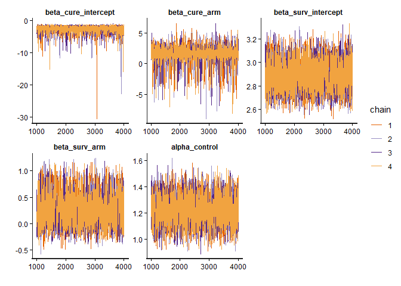
Posterior distributions
plot_densities(bayesian_fit)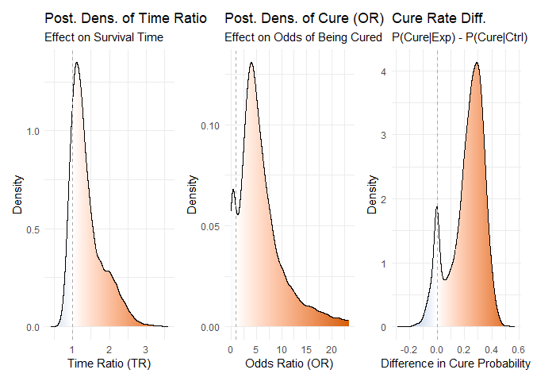
Figure 1: Posterior density distributions for Time Ratio, Odds Ratio of Cure, and Cure Probability Difference.
Joint posterior densities The mixture cure model jointly estimates the TR and OR parameters, yielding a joint posterior distribution of plausible values for both. This joint estimation is essential to avoid the bias that would arise if the parameters were fitted separately.
plot_correlated_densities(bayesian_fit, correlation_method="pearson")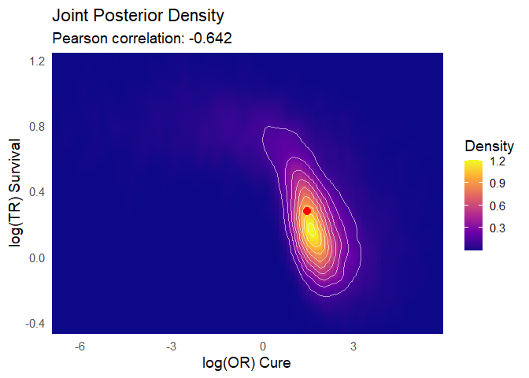
Figure 2: Joint posterior density distributions for Time Ratio & Odds Ratio of Cure
Posterior predictive check You can observe how the model’s predictions align satisfactorily with the Kaplan–Meier estimator:
plot(bayesian_fit)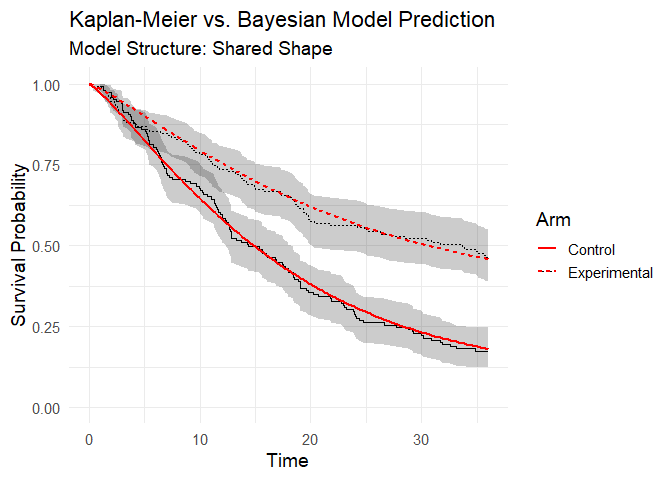
Figure 3: Posterior predictive check (model vs Kaplan-Meier data).
Step 6: Integrate toxicity data
Toxicity is summarized by a burden‑of‑toxicity score, which weights both the severity and the category of toxicity (see technical documentation).
set.seed(123)
soc_weights <- c(
"Gastrointestinal disorders" = 1.2,
"Blood and lymphatic system disorders" = 1.6,
"General, metabolic, and other disorders" = 1.3,
"Dermatologic disorders" = 1.1,
"Infections and infestations" = 1.6,
"Respiratory, thoracic and mediastinal disorders" = 2.5)
toxicity_output <- calculate_toxicity_analysis(
trial_data = toxicity_trial,
n_simulations = bayesian_fit$n_draws,
unacceptable_rel_increase = 0.5,
k_uncertainty = 5,
soc_weights = soc_weights
)Note on customizing toxicity weights
The default weights for toxicity categories (e.g., “Gastrointestinal disorders” = 1.2, “Respiratory, thoracic and mediastinal disorders” = 2.5) are a sensible starting point, but they are not one-size-fits-all. The clinical impact of a side effect is highly context-dependent. For example, severe nausea might be considered more burdensome in a palliative setting than in a curative one.
Understanding the Toxicity Analysis in Practice
The toxicity analysis provides a nuanced view of a drug’s safety profile. Let’s break down the key parameters using a practical example where the function returns these scores:
1. What are the WTS (Weighted Toxicity Scores)?
Think of the WTS as a total harm score for each arm of the trial. It’s not just a simple count of side effects. Instead, it’s a composite score where:
- Severity matters: High-grade toxicities (Grade 3-4) add much more to the score than low-grade ones.
- Type matters: Clinically relevant toxicities (e.g., blood disorders) are weighted more heavily than less critical ones (e.g., skin disorders).
Let’s say the experimental arm ended up with a harm score of 3.147, versus 2.007 for control. (Truth be told, these numbers dance around a little — it’s a simulation — but you get the idea.) What matters is the pattern: the experimental drug is clearly more toxic. The real question is: how much more is too much?
2. Defining “Unacceptable” (unacceptable_rel_increase = 0.5)
This parameter is your toxicity budget. It doesn’t set a fixed limit, but a relative one based on the control arm.
A value of 0.5 means:
“I am willing to accept a new drug that is up to 50% more toxic than the control. Anything beyond that, I consider unacceptable.”
Let’s apply this to our scores:
-
Your Budget (in WTS points):
0.5* 2.007 = 1.0035 -
The Observed Cost:
3.147 - 1.0035 = 2.1435
Conclusion: The observed increase in harm (2.1435) is greater than your budget (1.0035).
Therefore, according to your own definition, the toxicity of the new drug is unacceptable.
This comparison is used to center the final probability distribution.
3. Calibrating Uncertainty (k_uncertainty)
The real world has uncertainty. The k_uncertainty parameter lets you define how skeptical you are of the results, which influences the confidence of the final output. It directly controls the width of the final probability distribution.
- A low
k(e.g., 5) means you have high confidence in the data. You believe the observed difference is close to the true difference. This results in a narrow, sharp probability distribution, leading to a more decisive conclusion. - A high
k(e.g., 30) means you are more skeptical. You believe the observed difference could be due to random chance, especially with a small number of patients. This results in a wide, flat probability distribution, indicating less certainty in the outcome.
In short, k_uncertainty allows you to calibrate the model based on the quality and size of the trial data, ensuring the final result reflects an appropriate level of statistical confidence.
Step 7: Quality-of-life weighting
QoL adjustments modeled using multinomial distribution:
qol_scores <- sample_qol_scores(
prob_vector = toxicity_trial$qol,
n_samples = bayesian_fit$n_draws
)
plot_qol_histogram(qol_scores)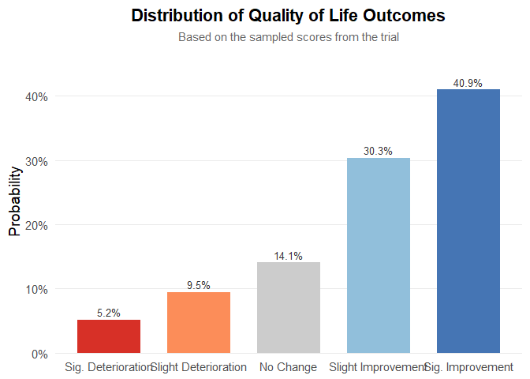
Figure 5: Multinomial distribution of QoL levels.
We have chosen this methodology because quality‑of‑life data are published very inconsistently—indeed, the data are a mess—and the approach will likely evolve over time. Therefore, you must read the paper, qualitatively interpret the results, and assess both the impact on quality of life and the strength of evidence. The outcome will be a multinomial distribution, as shown below. It is quite straightforward: to work with real data, the package includes the function generate_qol_vector(), which interactively generates a quality‑of‑life (QoL) probability vector.
From Clinical Data to a Final Score
Okay, we have the results from our Bayesian model, but how do we turn these numbers into a single, intuitive BayeScore?
This is where the calibration comes in.
Instead of using fixed rules, our model translates each clinical outcome into a
utility score (from 0 to 100) using a flexible exponential utility function.
Think of it this way:
the first improvements are the most exciting.
Going from no benefit to some benefit is a huge leap.
Further gains are still good, but the “wow factor” diminishes slightly.
Our function captures this key principle of diminishing marginal utility.
The best part is: you define the value judgment.
The shape of these utility curves is determined by setting simple anchor points.
You answer the question:
“How much is a certain clinical benefit worth on a 0–100 scale?”
For example, in our analysis, we used the following calibration:
outcomes_obj <- outcomes(
fit = bayesian_fit,
shrinkage_method = "none"
)
#>
#> ---
#> Posterior correlation as an identifiability check:
#> Correlation (pearson): r = -0.636
#> Explained Variance (r^2): 0.404 (approx. 40.4% information overlap)
#> Note: Roughly 40.4% of the cure variance is structurally indistinguishable from the time effect.
#> Interpretation: Strong (-0.50 to -0.70): high ambiguity, marginal estimates fragile.
#> ---
efficacy_draws <- get_bayescores_draws(
fit = bayesian_fit,
shrinkage_method = "none"
)
# 1. Define the Final Calibration Settings ---
my_final_calibration <- list(
efficacy = list(
# Aggressive curve for Cure
cure_utility_target = list(effect_value = 0.20, utility_value = 75),
# Slower curve for TR
tr_utility_target = list(effect_value = 1.25, utility_value = 50)
)
)
# 2. Run the Bayescores Function on Your Data ---
# The function takes your data objects directly as inputs.
final_scores <- get_bayescores(
efficacy_inputs = efficacy_draws,
qol_scores = qol_scores,
toxicity_scores = toxicity_output$toxicity_effect_vector,
calibration_args = my_final_calibration,
correlation_method= "pearson"
)
cat("--- Final Bayescores Summary ---\n")
#> --- Final Bayescores Summary ---
print(final_scores$component_summary)
#> Component Median Lower_95_CrI.2.5% Upper_95_CrI.97.5%
#> 1 Utility Cure (0-100) 82.535431 0.00000 93.85172165
#> 2 Utility TR (for TR>1) 48.801244 0.00000 98.24367936
#> 3 Penalty TR (for TR<1) 0.000000 -27.23494 0.00000000
#> 4 Efficacy Score (Combined) 91.451942 65.10802 98.54577821
#> 5 QoL Contribution (points) 3.899428 -9.60446 20.63752258
#> 6 Toxicity Contribution (points) -3.310793 -21.87517 -0.05676421
#> 7 FINAL UTILITY SCORE 92.752598 47.96544 99.87616618
print(final_scores$identifiability_level)
#> [1] "Strong"Step 9: Visualize final clinical benefit
BayeScore donut plot
After these analyses, the tool delivers a final clinical utility score derived from all the weightings, representing the drug’s overall evaluation. This score is based on a simulation that assumed therapeutic benefit while also incorporating some toxicity, yet still resulted in an improvement in quality of life.
Notably, the model captures a substantial benefit driven by the large long-term survival effect. However, it also indicates a clear identifiability problem: there is simply not enough evidence yet to disentangle these parameters.
plot_utility_donut(final_scores, trial_name ="Simulated dataset (unshrinkaged)")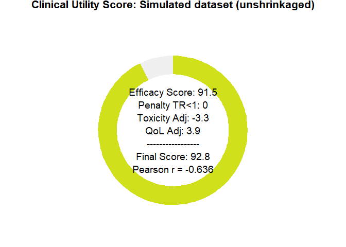
Figure 6: BayeScore donut plot.
Final score posterior distribution
It’s clear that estimating clinical benefit carries substantial uncertainty—studies are noisy, and sample sizes are limited. We’ve propagated every source of uncertainty throughout the analysis, so that you alone judge the credibility of the results.
plot_final_utility_density(final_scores)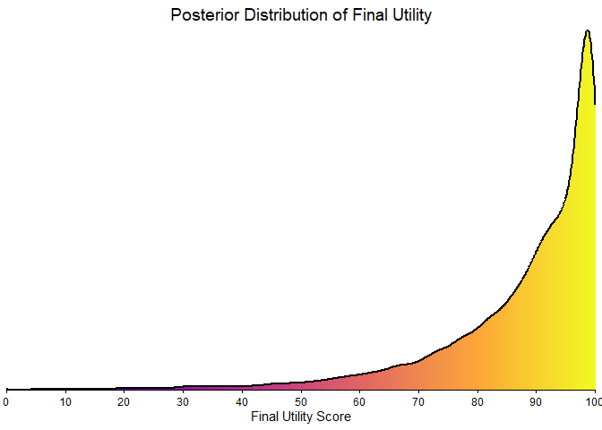
Figure 7: Final BayeScore posterior distribution.
Empirical bayesian shrinkage
Applying the Zwet prior is appropriate as a Bayesian regularization mechanism to contain bias under conditions of limited information. This approach controls model instability; it does not magically resolve the underlying identifiability problem, which can only be overcome with longer follow-up. This package implements two such data-driven priors:
-
“zwet”: a general prior based on 23 551 trials from all fields of medicine.
van Zwet E, Schwab S, Senn S. (2021). The statistical properties of RCTs and a proposal for shrinkage. Statistics in Medicine. DOI: 10.1002/sim.9173.
-
“sherry”: a more specific prior based on 415 phase III oncology trials, so an option for cancer-related studies.
Sherry AD, Msaouel P, et al. (2024). An Evidence-Based Prior for Estimating the Treatment Effect of Phase III Randomized Trials in Oncology. JCO Precision Oncology. DOI: 10.1200/PO.24.00363.
Let’s see how applying these corrections affects our final utility score.
# apply shrinkage with zwet prior
efficacy_draws_zwet <- get_bayescores_draws(
fit = bayesian_fit,
shrinkage_method = "zwet",
shrinkage_target = "primary"
)
final_scores_zwet <- get_bayescores(
efficacy_inputs = efficacy_draws_zwet,
qol_scores = qol_scores,
toxicity_scores = toxicity_output$toxicity_effect_vector,
calibration_args = my_final_calibration
)
# apply shrinkage with zwet prior
efficacy_draws_sherry <- get_bayescores_draws(
fit = bayesian_fit,
shrinkage_method = "sherry",
shrinkage_target = "primary"
)
final_scores_sherry <- get_bayescores(
efficacy_inputs = efficacy_draws_sherry,
qol_scores = qol_scores,
toxicity_scores = toxicity_output$toxicity_effect_vector,
calibration_args = my_final_calibration
)
# compare unshrunk vs. zwet vs. sherry
comparison <- rbind(
cbind(prior = "unshrunk", final_scores$component_summary[7,2 , drop = FALSE]),
cbind(prior = "zwet", final_scores_zwet$component_summary[7,2 , drop = FALSE]),
cbind(prior = "sherry", final_scores_sherry$component_summary[7,2 , drop = FALSE])
)
print(comparison)
#> prior Median
#> 7 unshrunk 92.75260
#> 71 zwet 78.27554
#> 72 sherry 87.69789
# plot utility donuts for each prior
plot_utility_donut(final_scores_zwet, trial_name ="Zwet's shrinkage")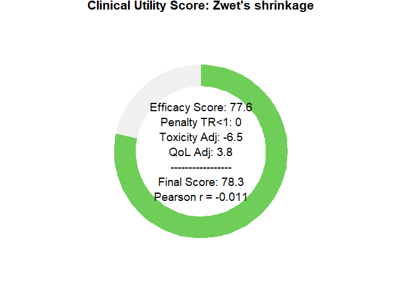
plot_utility_donut(final_scores_sherry, trial_name ="sherry's shrinkage")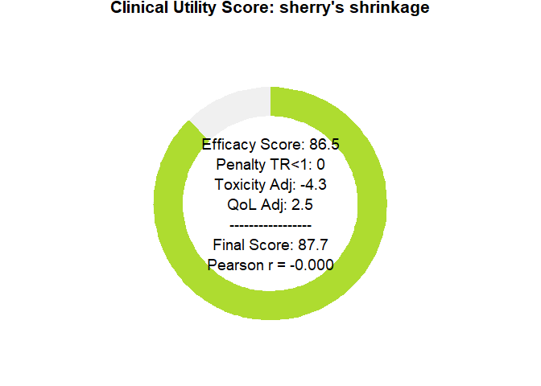
Sensitivity Analysis Dashboard
To clarify how parameter choices affect the final Bayescore and to support model calibration, we provide a sensitivity-analysis dashboard. It produces an 8-panel plot showing how the final utility responds to changes in the core parameters—Time Ratio (TR), Cure Rate, Quality of Life (QoL), and Toxicity—offering a global view of model behavior across scenarios.
# First, we define any custom calibration arguments.
# We can use an empty list to accept the model's defaults.
calibration_settings <- list(
efficacy = list(
cure_utility_target = list(effect_value = 0.20, utility_value = 75),
tr_utility_target = list(effect_value = 1.25, utility_value = 50)
)
)
# Now, we generate the complete 8-panel dashboard
# The function will print its progress as it generates the data.
dashboard <- generate_sensitivity_dashboard(
calibration_args = calibration_settings
)
#> Generating data for all 8 plots...
#> Data generation complete.
# Finally, display the plot
print(dashboard)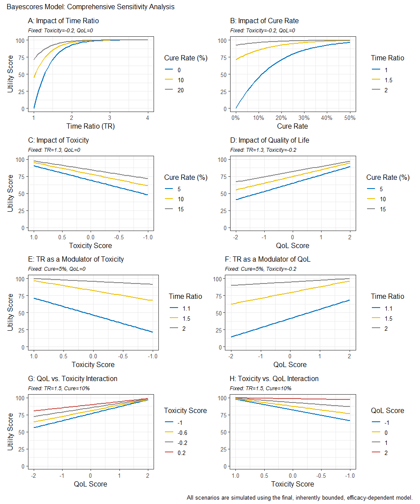
Reconstructing Survival Data from Published Plots
The goal is to transform a static plot into a usable dataset, enabling full re-analysis and custom visualization. For this demonstration, we used Figure 2 from Hortobagyi, G. N., et al. “Updated results from MONALEESA-2…” Annals of Oncology 29.7 (2018). This is an Open Access article under the CC-BY-NC license.
image_path <- system.file("extdata", "mona2.png", package = "bayescores")
# install.packages("magick")
library(magick)
trial_plot <- image_read(image_path)
print(trial_plot)
#> # A tibble: 1 × 7
#> format width height colorspace matte filesize density
#> <chr> <int> <int> <chr> <lgl> <int> <chr>
#> 1 PNG 913 478 sRGB TRUE 34793 57x57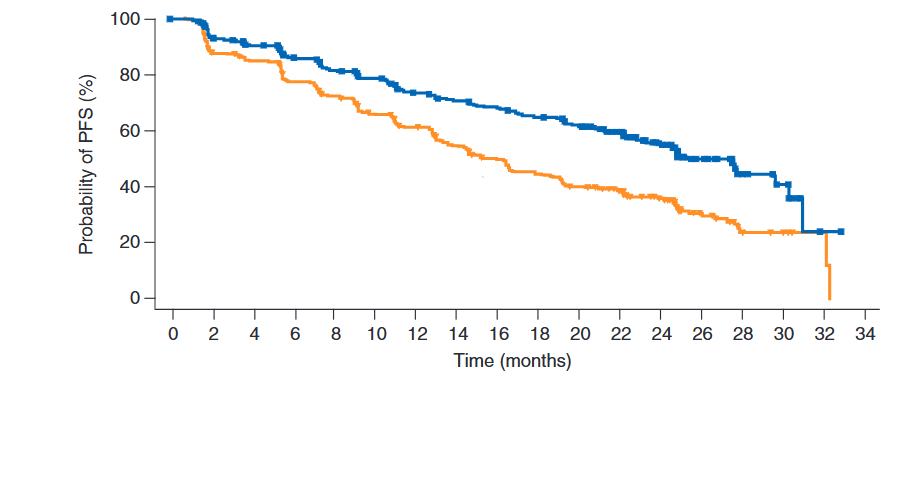
The workflow consists of three main steps:
Digitization We first extract the curve coordinates from the published image. This can be done with R packages like SurvdigitizeR. If you encounter issues, web-based tools like WebPlotDigitizer (available at https://automeris.io/) are excellent alternatives. The number-at-risk table that accompanies the plot is transcribed manually.
library(ggplot2)
library(dplyr)
library(survival)
library(survminer)
library(SurvdigitizeR)
plot_km_monaleesa <- survival_digitize(img_path = "C:/Users/Usuario/Documents/aft cure model/digitalizar/mona2.png",
num_curves = 2,
x_start = 0,
x_end = 34,
x_increment = 2,
y_start = 0,
y_end = 100,
y_increment = 20,
y_text_vertical = T)Reconstruction This is the core of the process. We use a programmed version of the algorithm described by Guyot et al. (2012) to reverse-engineer the individual event and censoring times from the aggregated digitized data. This step effectively creates a full patient-level dataset.
# The IPD reconstruction algorithm requires two inputs: the digitized curve
# coordinates and the number of patients at risk at specific time points.
# This data frame is a manual transcription of the "No. at risk" table
# from the published plot for both treatment arms.
nrisk_tbl_all <- rbind(
# Data for the first curve (treatment arm)
data.frame(
time_tick = c(0, 2, 4, 6, 8, 10, 12, 14, 16, 18, 20, 22, 24, 26, 28, 30, 32, 34),
nrisk = c(334, 294, 277, 257, 240, 227, 207, 196, 188, 176, 164, 132, 97, 46, 17, 11, 1, 0),
curve = 1L # Curve 1: Ribociclib + Letrozole arm
),
# Data for the second curve (control arm)
data.frame(
time_tick = c(0, 2, 4, 6, 8, 10, 12, 14, 16, 18, 20, 22, 24, 26, 28, 30, 32, 34),
nrisk = c(334, 279, 265, 239, 219, 196, 179, 156, 138, 124, 110, 93, 63, 34, 10, 7, 2, 0),
curve = 2L # Curve 2: Placebo + Letrozole arm
)
)
# Now we run the core reconstruction algorithm. This is done separately for each
# treatment arm because the survival and censoring patterns are unique to each one.
# Reconstruct IPD for the first curve (Ribociclib arm)
res1 <- reconstruct_ipd(
plot_km = subset(plot_km_monaleesa, curve == 1), # Use digitized data for curve 1
nrisk_tbl = subset(nrisk_tbl_all, curve == 1) # Use risk numbers for curve 1
)
#> # A tibble: 1 × 2
#> curve ok
#> <int> <lgl>
#> 1 1 TRUE
# Reconstruct IPD for the second curve (Placebo arm)
res2 <- reconstruct_ipd(
plot_km = subset(plot_km_monaleesa, curve == 2), # Use digitized data for curve 2
nrisk_tbl = subset(nrisk_tbl_all, curve == 2) # Use risk numbers for curve 2
)
#> # A tibble: 1 × 2
#> curve ok
#> <int> <lgl>
#> 1 2 TRUE
# The final step is to merge the results from both reconstructions into a single,
# tidy dataset that is ready for analysis and plotting.
res <- list(
# Combine the individual patient data from both arms
ipd = bind_rows(
res1$ipd %>% mutate(curve = 1L), # IPD from curve 1
res2$ipd %>% mutate(curve = 2L) # IPD from curve 2
) %>%
# Convert the numeric 'curve' column into a factor with meaningful labels.
# This is essential for correct labeling in plots and models.
mutate(curve = factor(curve,
labels = c("Placebo + letrozol",
"Ribociclib + letrozol"
))),
# 'drops' is likely a secondary output from the reconstruction function,
# containing details about the survival probability drops. We combine it here as well.
drops = bind_rows(
res1$drops %>% mutate(curve = 1L),
res2$drops %>% mutate(curve = 2L)
)
)Re-analysis and Visualization Once the IPD is generated, it can be used directly within bayescores or for any other analysis. This allows users to verify the original study’s results with survfit and coxph or create fully customized, publication-quality plots with ggsurvplot, providing complete analytical and visual control.
fit <- survfit(Surv(time, status) ~ curve, data = res$ipd)
ggsurvplot(
fit,
data = res$ipd,
palette = c("#E69F00", "#0072B2"), # Swapped colors to match new factor levels
conf.int = FALSE,
censor = FALSE,
xlab = "Time (months)",
ylab = "Probability of PFS (%)",
fun = "pct",
break.time.by = 2,
xlim = c(0, 34),
legend.title = "",
legend.labs = c("Ribociclib\n+ Letrozole","Placebo\n+ Letrozole"),
legend = c(0.75, 0.85),
risk.table = FALSE
)
Interactive Shiny App for Clinical Data Extraction
To facilitate the information acquisition process, we have developed an interactive function that allows easy digitalization of Kaplan–Meier curves from supplementary papers, and simplifies the input of quality-of-life (QoL) and toxicity data in a user-friendly manner.
bayescores()
Why bayescores? a more meaningful approach
- Clinically interpretable: time ratios are easier to explain to clinicians and patients than hazard ratios, and mixture cure models separate short-term survival effects from the long-term survivor fraction. This resolves the problem of “double counting” benefit—first via the HR and again through a separate long-term bonus—ensuring both metrics remain independent.
- Incorporates mechanistic knowledge: allows the encoding of pharmacological context through priors. For example, the model can account for the fact that immunotherapy often produces a “tail” of long-term survivors, whereas agents like CDK4/6 inhibitors or chemotherapy typically yield a temporal delay without a genuine cure fraction.
- Resolves identifiability challenges: uses informed priors to solve “equifinality” in complex datasets (e.g., crossing curves), effectively distinguishing between a genuine biological plateau and an artifact caused by sparse data or heavy censoring.
- Contextualizes data maturity: models the underlying structure rather than just observed events, making the framework resilient to “snapshots” taken at different follow-up times. It quantifies the stability of the survival benefit, preventing premature claims of cure in immature datasets while validating solid plateaus in mature ones.
- Embraces uncertainty: the Bayesian framework propagates uncertainty from all model stages, displaying full posterior distributions rather than collapsing results into single point estimates.
- No thresholds: uses continuous parameters and proportional weights rather than fixed cut-offs, producing smooth, gradual changes in the score. This avoids all-or-nothing jumps and makes the valuation process transparent, reproducible, and customizable to stakeholder priorities.
- Integrates multiple dimensions: combines efficacy, toxicity, and quality of life within a unified decision-analytic framework (MAUT), with hierarchical aggregation that mirrors clinical reasoning: efficacy first, then QoL, then toxicity.
- Customizable toxicity weighting: Weighted Toxicity Scores can incorporate grade-specific and type-specific penalties, reflecting the clinical relevance of different adverse events and aligning with disease-specific “toxicity budgets.”
-
Accessible implementation: provided as an open-source R package (
bayescores) with full workflow examples on GitHub, including KM curve digitization and IPD reconstruction tools, plus a web interface for no-code calculation and visualization.
Citation
citation("bayescores")